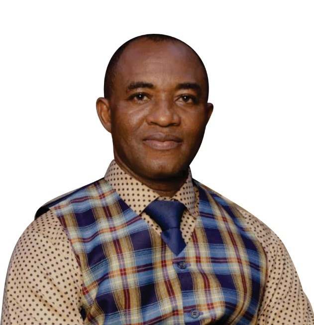

Kingdom Worship Ministry is a Faith-based Christian Organization. It is an arm of Bride City International Church, which was founded to run the CWN vision of a universal 24/7 worship network on earth beyond denominational ties.

Christian Worship Network was founded on February 28, 2001 by the founder of Bride City International Church, Bishop Magnus Onyeaku Upon the belief that:
Man was created to worship God on earth, as angels do in heaven.
Men should choose their respective and exclusive personal worship hours.
A reasonable remote worship network is as effective as a local worship session.
Worship breaks denominational rivalry which Satan promotes to weaken the Church.
KWM is the 24- hour worship arm of the Apostolic Mission, Bride City International Church. It was founded for the furtherance of the Gospel of Our Lord Jesus Christ through the tenets of Christian Worship Network, which teaches to set up a 24-hour worship networks on earth as a necessary counterpart to the on-going angelic worship network revealed in the Bible; for end-time revival. Its Operations headquarters is presently in the Municipal Area Council of FCT Abuja, Nigeria.
To revive the Body of Christ, the Church, she must be awakened to that selfless love of God by which the first Church did exploits. This shall be done by founding Church Centers where divine love shall be taught and practically applied by all members.Through live and strategic Gospel Campaigns,
Multi-level Discipleship and Internet Multimedia Outreaches KWM plans to:
Plant and run discipleship centers, market-place fellowships and, local Churches; Use local church cell fellowships for worship training and effective coordination; Run non-denominational remote worship networks across the Body of Christ.
In partnership with Bride City i-Church, KWM, primarily targets the Nominal Christian – be he lost, penitent or grown in faith. This group is particularly violent and rebellious to the word of God. But, when saved and trained, becomes so zealous and resourceful to the Lord and His Church.
These are expected to form the ministry’s solid resource base within our years of operation.
To be most pivotal in End-time Revival.
To manifest the Love of God with anointed ministrations that defy denominational walls.
1. To institute a 24-hour Worship Order on earth;
2. To perform all functions of the Christian Church;
3. To advocate for vulnerable persons within the Body of Christ;
4. To encourage Para-church fellowships;
5. To produce and distribute gospel materials;
6. To educate, train and empower Christian Leaders;
7. To raise funds for the work of ministry.
At Kingdom Worship Ministry, we are continually growing and adapting to meet the needs of our community. Ensuring that everyone has the opportunity to connect with God. If you wish to learn more about our initiatives or how to get involved, please do not hesitate to contact us.....